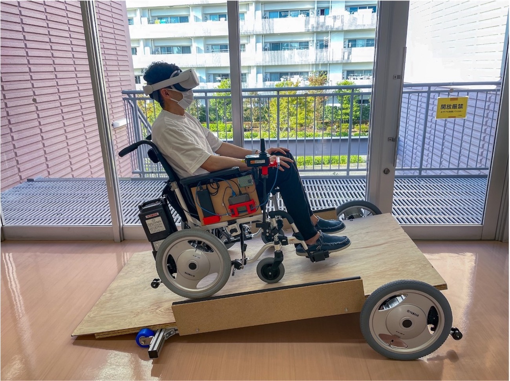

PROJECTS
CV
PROJECTS
RESEARCH

移動型スロープによるHMDと電動車椅子で構成したVRライドの上昇感覚の向上
移動型スロープを組み合わせることで静止したスロープに比べ上昇感覚を向上させるシステムを提案。
(2021)
VRライドと障害物によるアトラクション体験要素の増幅
HMDと電動車椅子で構成したVRライドに小規模な坂道や障害物を組み合わせることで、アトラクション体験の要素である衝突、降下、上昇体験を増幅させる手法を提案。
(2021)
Sustttainer
ジェスチャ認識とマルチタッチ機能によるさする演奏システム。
(2020)
WORKS
UniverSound
触り方次第で違う楽器音が出力される楽器。
(2019)
ラック&ピニオン式回転駆動装置を用いたチュッパチャップスを高速で開ける機械
「飴を開ける」という簡単な行動に対して無駄な時間だけどワクワクする体験を提供。
(2019)